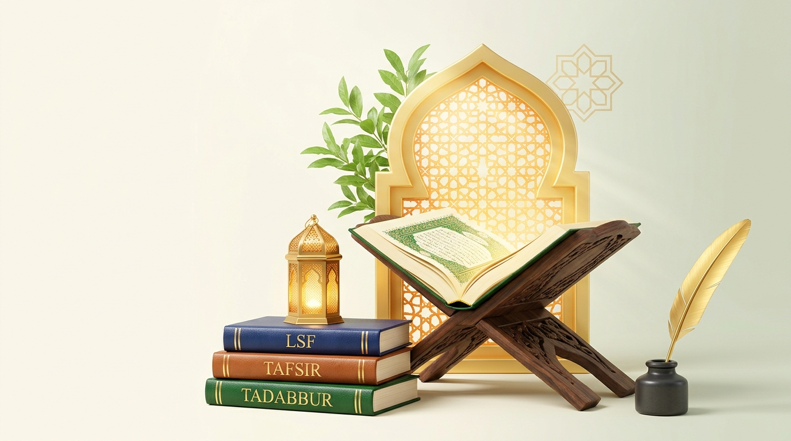

Quranic LSF & Tafsir Explorer • اللسانيات الوظيفية النظامية
Menjembatani analisis gramatika Linguistik Sistemik Fungsional (LSF) dengan khazanah Tafsir Kemenag RI, Tafsir Ibnu Katsir, dan Nahwu–Balaghah untuk mendalami makna struktur ayat serta mendukung pembelajaran bahasa Arab Al-Qur'an.
Tadabbur Ayat & Linguistik Sistemik Fungsional
Telusuri 114 surat (6.236 ayat), petakan Transitivitas, Mood & Tema ala buku LSF, dan sandingkan dengan Tafsir Kemenag serta Ibnu Katsir.

Distribusi 6 Proses Transitivitas Halliday
Korpus LSF aktif dibandingkan dengan temuan Tesis Agus Gunawan (2025) pada QS. Ibrahim Segmen 2.
Korpus LSF Terkurasi / Tersimpan
0 AyatBenchmark: QS. Ibrahim Segmen 2 (Ayat 11–20)
34 Klausa (Tesis 2025)Perbandingan Struktur Retorika & Leksikogramatika Dua Ayat
Sintesis Analisis Komparatif LSF:
Direktori Lengkap 114 Surat & 6.236 Ayat Al-Qur'an
Pilih surat untuk membaca seluruh ayat, membuka Tafsir Kemenag, atau menganalisisnya dengan metode LSF.
Al-Fatihah (Pembukaan)
Pilih surat & ayat mana saja (bertanda ★ memiliki analisis terkurasi Ebook LSF) untuk dianalisis & dibandingkan dengan Tafsir.
Klik Unsur Kata di Bawah untuk Audio Cue, Akar Kata (Root), Kategori Nahwu & Peran LSF:
Diagram Visual Struktur LSF Berlapis (Multi-Tier Clause Diagram)
Keselarasan peran kata dalam 3 dimensi metafungsi secara simultan (kanan ke kiri)
Perbandingan Penjelasan Ayat: Metode LSF vs. Tafsir Terkenal & Kontemporer
Menimbang apa yang diungkap oleh tata bahasa fungsional (LSF/Ebook) dibandingkan dengan Tafsir Kemenag, Tafsir Klasik, dan Tafsir Kontemporer.
1. Metode LSF (3 Metafungsi Halliday)
Lihat Teks Lengkap Tafsir Tahlili Kemenag RI untuk Ayat Ini (Klik untuk buka)
Tafsir Ibnu Katsir (Lubaabut Tafsiir Jilid I–VIII) untuk Ayat Ini
Teks Arab Asli Tafsir Ibnu Katsir
Sintesis Perbandingan: Titik Temu & Keunggulan Khas LSF vs. Metode Tafsir
Matriks Perbandingan Metodologi: LSF vs. Tafsir Klasik & Kontemporer
Membandingkan paradigma, tokoh utama, unit analisis, keunggulan, serta relasi komplementernya dengan LSF.
| Metode / Aliran | Era & Tokoh Utama | Paradigma Dasar | Unit Analisis | Keunggulan & Relasi dengan LSF |
|---|